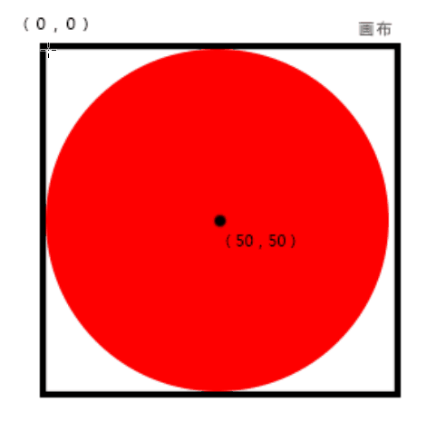
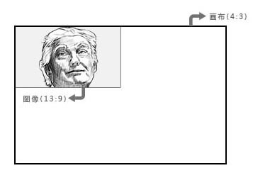
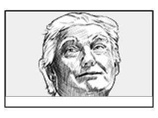
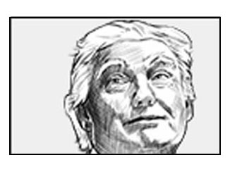
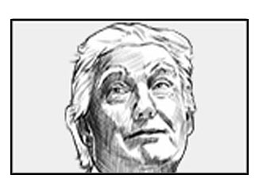

svg
定义
Scalable Vector Graphics（可缩放矢量图形）是一种基于可扩展标记语言（XML），用于描述二维矢量图形的图形格式，。[1]，是 HTML 下的一个分支。
使用
有多种方法使用 svg。
-
直接在 html 中嵌入 svg 标签
<svg xmlns="http://www.w3.org/2000/svg" version="1.1"> <circle cx="50" cy="50" r="25" stroke="black" stroke-width="2" fill="white" /> </svg> -
使用 object、iframe、img 等标签引入 svg 文件
<object data="demo.svg" type="image/svg+xml" /> <iframe src="demo.svg"></iframe> <img src="demo.svg"> <embed src="demo.svg" type="image/svg+xml" /> - 通过 javascript 创建并注入到 DOM 中
坐标系统
坐标
svg 以网格系统来表示图像，左上角为坐标原点，向右为 x 轴正方向，向下为 y 轴正方向。
<svg width="100" height="100">
<circle cx="50" cy="50" r="25"/>
</svg>
属性
写在 svg 标签（根标签）上的属性。
-
width、height ：画布（viewport）宽高，画布之外的部分将被不显示
<svg width="50" height="50" style="border: solid 1px #000"> <circle cx="0" cy="0" r="50" fill="red"/> </svg> -
viewBox="x1 y1 x2 y2" ：裁切 (x1, y1) 到 (x2, y2) 的矩形区域。viewBox 相当于镜头，将图像裁切后缩放到占满画布。
使用以上代码绘制一个圆形，不添加 viewBox 时应该为如下显示：<svg width="50" height="50" style="border: solid 1px #000"> <circle cx="0" cy="0" r="50" fill="red"/> </svg>添加了 viewBox="0 0 50 50" 之后： viewBox 实际做的工作（work on ps） -
preserveAspectRatio="XalignYalign way" ：画布与图像缩放方式。XalignYalign 设置裁切出来的图像的对齐方式， way 设置缩放方式。
Xalign 解释 xMin 左对齐 xMid 水平居中 xMax 右对齐 Yalign 解释 YMin 顶对齐 YMid 垂直居中 YMax 底对齐 way 解释 meet 等比缩放适应画布 slice 等比缩放占满画布 none 不等比缩放占满画布 此处解释 way 的三个参数，上图展示的是 viewport 和 viewBox 裁切出来的矩形宽高比一致的情况，如果不一致，则按照 way 参数进行缩放。缩放以下图片（已经设置 xMinYMin，即先左对齐 + 顶对齐）： 初始图像 preserveAspectRatio="xMinYMin meet" preserveAspectRatio="xMinYMin slice" preserveAspectRatio="xMinYMin none"
- fill="color" ：用于设置形状的填充颜色
- fill-opacity="opacity" ：用于设置形状填充不透明度
- stroke="color" ：用于设置形状的描边颜色
- stroke-width="number" ：用于设置形状描边的宽度
- stroke-opacity="opacity" ：用于设置形状描边不透明度
- stroke-linecap ：用于设置线段边缘终结方式
- stroke-linejoin ：用于设置端点转角方式
- stroke-dasharray ：用于设置形状描边点间隔
- stroke-dashoffset ：用于设置形状描边偏移
绘制
通过 svg 可以绘制：
- rect：矩形
- polygon：多边形
- circle：正圆
- ellipse：椭圆
- line：直线
- path：路径
- text：文本
矩形
使用 rect 来绘制矩形，矩形可设置的属性有：
- x：矩形左上角的 x 坐标
- y：矩形左上角的 y 坐标
- width：矩形宽度
- height：矩形高度
<svg>
<rect x="0" y="0" width="50" height="50" fill="red"/>
</svg>
多边形
使用 ponlygon 来绘制多边形，多边形可设置的属性只有 points ，通过 points="x1,y1 x2,y2 x3,y3..." 来指定多边形的点。
<svg>
<polygon points="0,0 100,100 0,50" fill="red"/>
</svg>
正圆
使用 circle 来绘制正圆，正圆可设置的属性有：
- cx：圆心 x 坐标
- cy：圆心 y 坐标
- r：半径
<svg>
<circle cx="25" cy="25" r="25" fill="red"/>
</svg>
椭圆
使用 ellipse 来绘制椭圆，类似于正圆，但椭圆需要设置两个半径：
- cx：圆心 x 坐标
- cy：圆心 y 坐标
- rx：x轴 半径
- ry：y轴 半径
<svg>
<ellipse cx="50" cy="25" rx="50" ry="25" fill="red"/>
</svg>
直线
使用 line 来绘制直线，直线可设置的属性有：
- x1：第一个点的 x 坐标
- y1：第一个点的 y 坐标
- x2：第二个点的 x 坐标
- y2：第二个点的 y 坐标
<svg>
<line x1="0" y1="0" x2="100" y2="0" stroke="red"/>
</svg>
路径
路径只有一个属性 d ，然后用指令来控制当前点的变化。
- M x y ：moveto，移动到 (x,y)
- L x y ：lineto，从上一个点画一条直线到 (x,y)
- H x ：horizontal lineto，从上一个点画一条水平线到(x,上一点的y)
- V y ：vertical lineto，从上一个点画一条垂直线到(上一点的x,y)
- Z ：closepath，使用直线闭合路径（初始点）
<svg>
<path/ d="M 0 0 L 100 100 H 75 V 50 Z" stroke="black" stroke-width="1" fill-opacity="0">
</svg>


文本
使用 text 来绘制文本，其属性有：
- x：文本的 x 坐标
- y：文本的 y 坐标
<svg>
<text x="0" y="15" fill="red">hello world</text>
</svg>
动画
使用 stroke-dasharray + stroke-dashoffset + CSS3 动画来为 svg 创建动画。
stroke-dasharray
stroke-dasharray 用于设置虚线描边类型， stroke-dasharray="x1, x2, x3, ..."
stroke-dashoffset
stroke-dashoffset 设置虚线的偏移。（为了便于理解，此处添加了动画）
CSS3 动画
制作描边动画的原理为：
- 通过 stroke-dasharray 设置虚线描边，超出部分不显示
- 通过 stroke-dashoffset 设置偏移
- 通过 CSS3 动画设置 transition: stroke-dashoffset time，让图像在修改（通过脚本等） dashoffset 时候动起来
<!-- 此处代码简化为点击按钮后显示线条 -->
<!-- html 代码 -->
<svg>
<!-- 画一条 200px 的水平线 -->
<path id="path" d="M 0 0 L 200 0" stroke-width="2" stroke="black" stroke-dasharray="100%" stroke-dashoffset="0%"/>
</svg>
<input id="btn" type="button" value="显示">
<!-- css 样式 -->
<style>
#path {
transition: stroke-dashoffset 1s; // 开启 stroke-dashoffset 的过渡动画
}
</style>
<!-- js 代码 -->
<script>
// 点击按钮后修改 stroke-dashoffset
document.getElementById('btn').onclick = function() {
document.getElementById('path').setAttribute('stroke-dashoffset', '100%');
}
</script>
绘图软件
常用的可绘制 svg 的软件有：
- Adobe Illustrator（Ai）
- Inkscape
- Google Docs：是一个 web 网站
- ...
参考文献